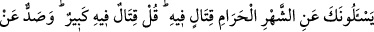
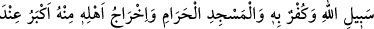
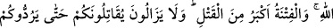
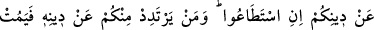
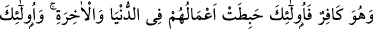
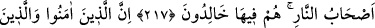
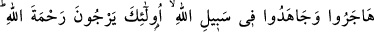
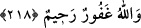

HARAM AYLARI
217. Sana haram ayı, yâni onda savaşmayı soruyorlar. De ki: O ayda savaşmak
büyük bir günahtır. (İnsanları) Allah yolundan çevirmek, Allah’ı inkâr etmek,
Mescid-i Haram’ın ziyâretine mâni olmak ve halkını oradan çıkarmak ise Allah
katında daha büyük günahtır. Fitne de adam öldürmekten daha büyük bir günahtır.
Onlar eğer güçleri yeterse, sizi dîninizden döndürünceye kadar size karşı savaşa
devam ederler. Sizden kim, dîninden döner ve kâfir olarak ölürse, onların yaptıkları
işler dünyâda da âhırette de boşa gider. Onlar cehennemliktirler ve orada devamlı
kalırlar.
218. İman edenler ve hicret edip Allah yolunda cihâd edenler var ya, işte bunlar,
Allah’ın rahmetini umabilirler. Allah, gafûr ve rahîmdir.
Rivâyet edilmiştir ki Rasûl-i Ekrem (s.a.) Efendimiz, Bedir gazasından iki ay evvel,
Medîne’ye hicretinden on yedi ay sonra Cumade’l-âhıre ayında halasının oğlu Abdullah
b. Cahş’ı muhacirlerden Sa’d b. Ebî Vakkas ez-Zührî, Ukkâşe b. Mıhsan el-Esedî, Utbe
b. Gazvan es-Sülemî, Ebû Huzeyfe b. Rebîa, Süheyl b. Beyza, Âmir b. Rebîa, Vâkıd b.
Abdillah ve Hâlid b. Bükey (r.a.) den oluşan sekiz zât ile beraber seriyye olarak
göndermiş ve kumandan olan Abdullah b. Cahş’a bir mektup vererek:
“Allah’ın adı üzere yola çık. İki gün yol gitmeden mektubu açıp bakma. İki gün
sonra konaklayınca mektubu aç ve arkadaşlarının huzurunda oku. Sonra da
emirlerimi yerine getir. Arkadaşlarından hiçbirini seninle beraber gelmeleri için
zorlama” diye tâlimât vermişti. Abdullah iki gün yol gidince mektubu açıp baktı.
Mektupta şunlar yazılı idi.
“Bismillahirrahmânirrahîm. Bu mektubumu açıp baktığında sana tâbi olanlarla